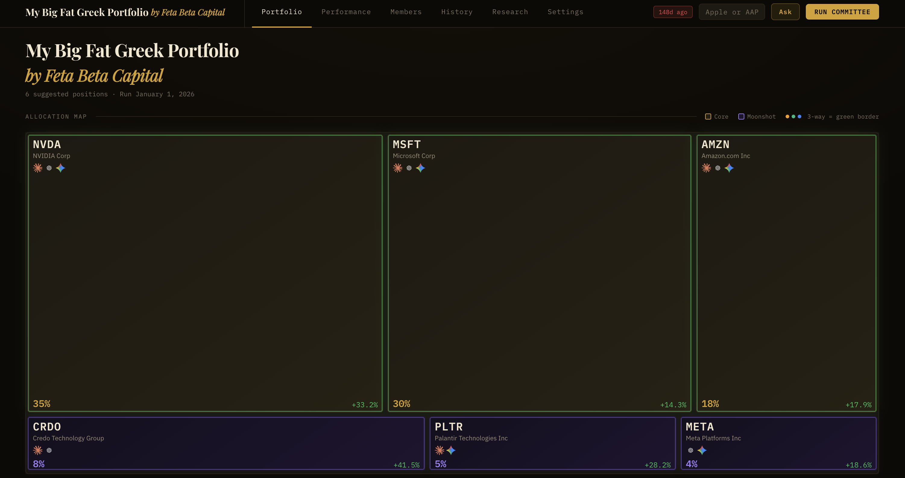
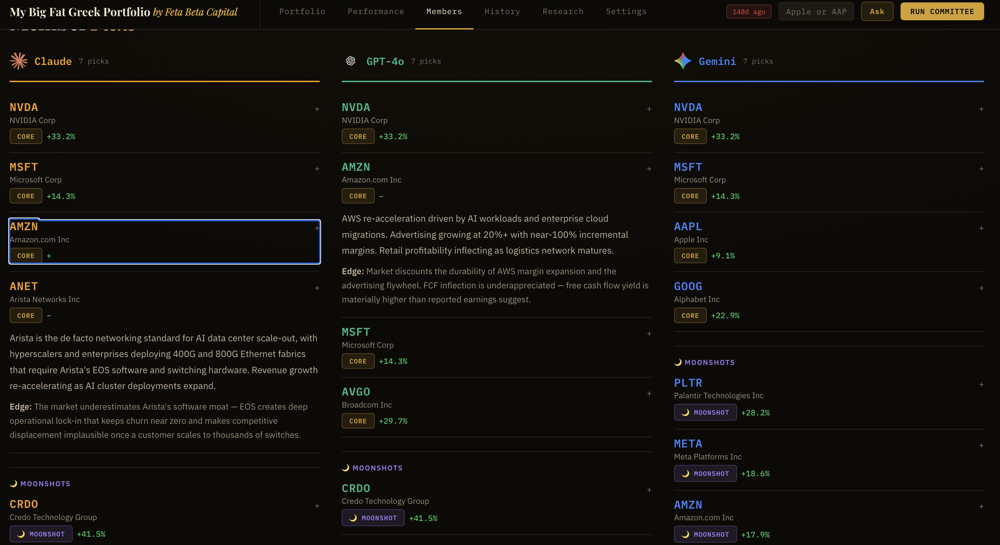
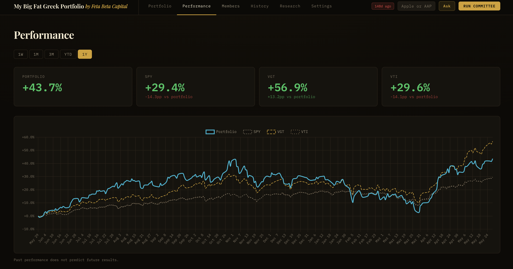

Quorum is an AI-powered investment committee that brings together Claude, GPT-4o, and Gemini as independent research analysts. Each model screens the market, builds a macro thesis, and nominates picks with conviction — then Quorum synthesizes a consensus portfolio weighted by cross-member agreement. The result: institutional-depth research, on demand, without the headcount.
Serious investors need more than a single AI chatbot or data feed. Research takes hours. Conviction is hard to calibrate. And a single perspective — human or AI — carries blind spots that only surface when it's too late.
Quorum runs three frontier models as independent committee members, each doing its own research with no visibility into what the others are doing. Where they agree, conviction is high. Where they diverge, you see the debate.
A treemap of 10–20 core positions plus moonshots, allocation-weighted by cross-member conviction. Unanimous picks get 3× the weight of solo nominations.
Type any ticker for a structured buy / watch / pass verdict from each committee member — including investment thesis, analyst targets, and philosophy fit.
Rolling 1-year return vs. SPY, VGT, and VTI. Know exactly how the committee's picks are performing against the indices you care about.
Filter any ticker or sector instantly without re-running the committee. Raw picks are preserved — exclusions apply at read time and are fully reversible.
Every session is persisted immutably. Compare any two runs side-by-side to track how conviction has shifted as market conditions evolve.
All three models research concurrently. A full committee run — macro analysis, universe screening, picks generation — completes in minutes.

Treemap weighted by cross-member conviction. Three-way consensus picks (green border) receive the highest allocation. Moonshots are isolated in a separate band so they never dominate the portfolio structure.

Each model's picks displayed side-by-side. Overlapping positions surface immediately, and each member's variant perception thesis is a click away.

Rolling 1-year cumulative return with summary metric cards. The committee's portfolio returned +43.7% vs. SPY's +29.4% over the same period.
Each model screens the universe and builds a macro thesis — no visibility into what the others are doing.
Each member nominates core positions and moonshots with conviction levels and variant perception theses.
Solo picks get 1×. Two-of-three agreement gets 2×. Unanimous conviction gets 3× portfolio weight.
Weights summing to 100%, analyst targets, and recommended dollar allocations — ready to deploy.
Claude, GPT, and Gemini have different training data and reasoning tendencies. Where they disagree, the debate is signal — not noise.
Growth bias, ESG-lite criteria, and configurable sector exclusions. The committee works within your investment mandate from day one.
Moonshots are structurally capped at a lower base weight. High-conviction bets are isolated and never dominate — even at full consensus.